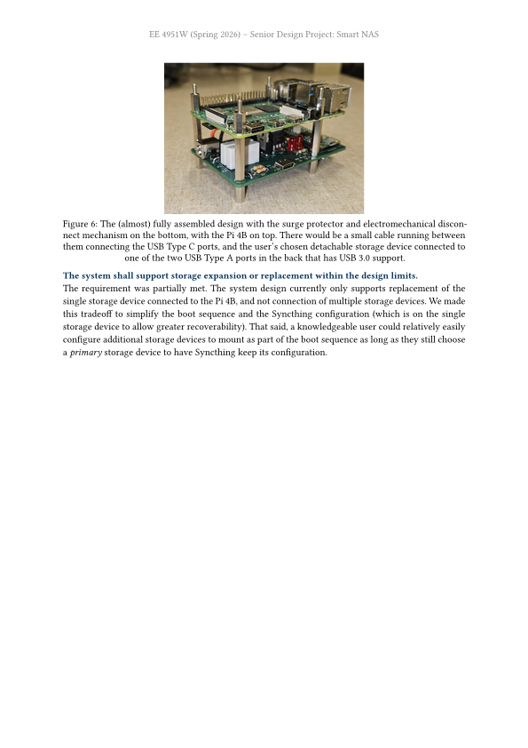
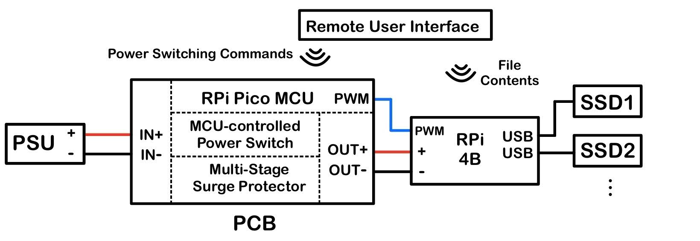
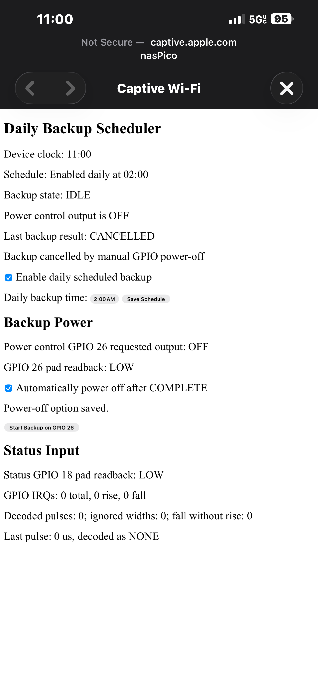
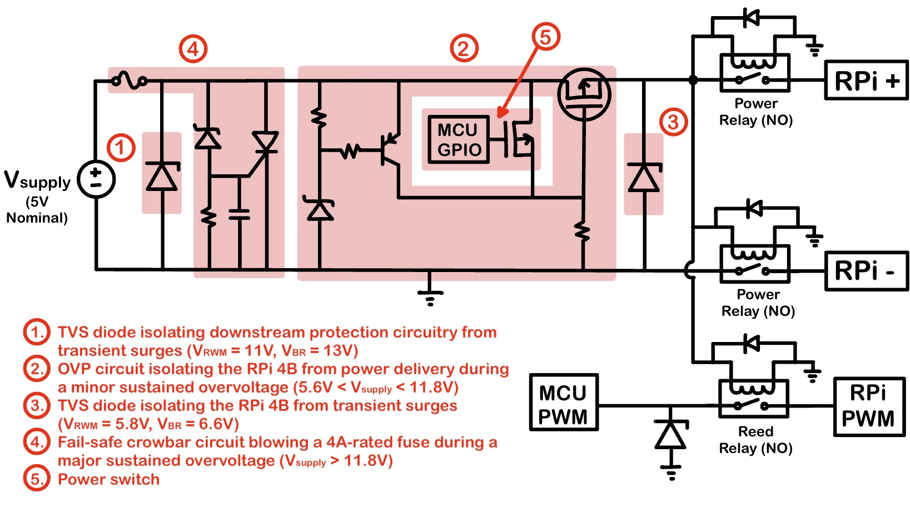

Overview
Traditional network-attached storage (NAS) systems are always available, and thus always exposed to a power connection. As a result, NAS storage devices are exposed to power faults as well. A strong surge can destroy data on a powered storage device. The Smart NAS system remedies this. The default Smart NAS behavior is remaining detached from wall power, with an overvoltage protection (OVP) circuit gating wall power connection. File backups occur manually, or can be set to run on a daily schedule. On a backup event, the Smart NAS will automatically receive wall power, remain on as long as needed to complete backup, and then electrically isolate itself from wall power.

My Role
I developed Raspberry Pi Pico 2 W firmware. The Pico 2 W is the always-powered component of the Smart NAS. The Pico hosts a Wi-Fi access point, where users connect and interact with a Smart NAS web portal to immediately request or schedule file backups. When it's time for a backup, the Pico unblocks power to downstream components through one of its GPIO pins.
In a nutshell, the Pico 2 W acts as a remote power control module.
During backups, the Pico reads communication pulses from the downstream Raspberry Pi 4B that's in charge of writing files to the storage SSD. The Pi 4B encodes system status within pulse lengths. For example, ALIVE status is 10ms, COMPLETE is 15ms, ERRORs can be 30, 35ms; all with a 2ms tolerance.
When the syncs are completed, the Pico will toggle power to downstream components off.
System Architecture Diagram

Technical Implementation
My confirmed implementation work includes firmware request handling for captive-portal control of the automated wireless file-backup system.

Verification / Debugging
I validated an over-voltage protection circuit through electrical stress testing using a structured stage-by-stage approach.
The OVP circuit is intended to provide protection for different surge types and durations, whether transient or sustained surges of varying intensity.
Testing sustained surges is easy enough with lab power supplies. Testing transient surges without sophisticated equipment is tougher. The group ended up charging a large capacitor separately, then connected the charged capacitor to the input power rails to emulate a transient surge.
One noteable hiccup we didn't see coming was testing sustained surges on a surrogate board; only difference being the Pico 2 W MCU removed to avoid frying it. While testing sustained surges, the node in stage (4) connecting the Zener diode and SCR (OVP diagram below) examined transient spikes, un-gating the SCR and shorting the ground connection. We confirmed this by setting an oscilloscope trigger for >=12V, and in fact captured the transient spikes. Thorough hardware examination verified all components equivalent to our demo setup, and the cause for this transient spike eluded us. Except for one difference, being the presence of the Pico board. Testing the same system with the Pico board once confirmed our system worked, and the transient spike was unique to the surrogate board. Evaluating the Pico board's design, we observed the collective capacitance of the board smoothened the otherwise-occuring Stage 4 spike. Creating a surrogate device roughly emulating the collective Pico 2 W dev board capacitance smoothened the transient spike that was throwing a wrench in our testing. We created a system that was testable and more closely representative of our actual hardware product.
